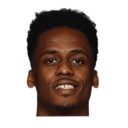

Vincent Goodwill:Fred Hoiberg on Rick Carlisle’s words:
“I think it’s great. Rick as the president of the coaches association, sticking up for a fellow coach. Knowing Luke Walton... I think he’s a hell of a coach and he’s doing a great job.”

35 quotes from Fred Hoiberg about 20 other people around the NBA, newest first. Each one links to its original source.
Vincent Goodwill:Fred Hoiberg on Rick Carlisle’s words:
“I think it’s great. Rick as the president of the coaches association, sticking up for a fellow coach. Knowing Luke Walton... I think he’s a hell of a coach and he’s doing a great job.”
“I think his push has progressively gotten better, his numbers have gone up month by month. I think the biggest thing for him, watching him play, is he’s getting comfortable out there. I thought the [Warriors game Jan. 20], even though we got it handed to us, I thought Derrick was phenomenal, especially early. We had the lead when he went out of the game and it went downhill from there. “But I thought he guarded, he was battling [Stephen] Curry, and offensively he was in attack mode the whole game. That’s what we need. When Derrick has that kind of attack and push, we have a chance for a good second half [of the season].”
KC Johnson:Fred Hoiberg:
“Kevin McHale is as good as I’ve played for. He’s a great person, a relationship guy who is so good at getting the guys to believe”
What NBA players and coaches have said about Fred Hoiberg →

Antonio Blakeney1 quote“With McHale, he would just sit there all day and talk to you. Just talk about spacing and about the game and I played golf with him last year and he had a whole crowd around him…he’s a special human being.”
Bulls coach Fred Hoiberg said.
“He’s a huge key for them coming off the bench with that second unit. Derrick is a guy I will always root for. And he went out and played terrific tonight.”
Fred Hoiberg on Luka Doncic:
“I love the pace that he plays with, the instincts he has, his ability to finish in the paint. His best quality is as a passer. He’s battling defensively. He has the stepback shot, the Eurostep. He’s the whole package.”
KC Johnson:Hoiberg on Portis injury:
“Bobby has been so durable early in his career. Just to see his reaction, you knew it was something seriouswhen he went flying in the crowd. We’re thankful it wasn’t a more severe injury.”
Fred Hoiberg on whether Zach LaVine will play some PG:
“Based on where we are right now, we’re going to have to have him facilitate and lead the break.”
“I’ve talked to Jabari about what I’m thinking about what his role will be with the second group,”
Fred Hoiberg on starting Jabari Parker at PF over Bobby Portis:
“We need to play Jabari at that position. And we love Bobby’s energy and the role that he’s played pretty much since he’s been here is that sixth man. So that was really the decision.”
Hoiberg on LaVine deal:
“I think we're all very excited about Zach coming back as a Bull and being here long-term.”
KC Johnson:Fred Hoiberg on Kris Dunn:
“When you see the fall and chip out of the floor, the fact he didn’t lose his teeth completely is unbelievable. He has a lot of pain in his mouth. They put braces on him to try to stabilize the area. But right now, the concern is the concussion.”
Mike McGraw:Fred Hoiberg on adjusting to LaVine:
“We're going to run a lot of the same things that we did. We put this system in place with Zach in mind.”
Vincent Goodwill:Fred Hoiberg on Rick Carlisle’s words:
“I think it’s great. Rick as the president of the coaches association, sticking up for a fellow coach. Knowing Luke Walton... I think he’s a hell of a coach and he’s doing a great job.”
Bulls coachFred Hoiberg on Mavs rookie Dennis Smith Jr.:
“I absolutely love the kid. He’s as explosive as any point guard in the league.”
Bulls coachFred Hoiberg on the cream of this rookie class:
“I’ll put Lauri [Markkanen] up there with any of them. We wouldn’t trade him for anybody.”
KC Johnson:Fred Hoiberg on Nikola Mirotic:
“He’s just so confident now. I truly believe that’s rubbing off on our entire team.”
KC Johnson:Hoiberg on Kyrie Irving:
“In my opinion, there’s not another point guard playing better than him in the league.”
K.C. Johnson:Hoiberg on whether he would've asked Wade to be 6th man with Bulls:
“We did have a couple conversations about that but obviously with the buyout, I’m happy for Dwyane. He's in position again to compete for a championship and playing very well.”
Vincent Goodwill:Fred Hoiberg on Derrick Rose:
“You hope everything's okay, with he and his family, that's my immediate reaction... I enjoyed that time with him,enjoyed coaching him. He was a wonderful kid. You hope everything is okay.”
KC Johnson:Hoiberg on LaVine:
“I’m sure we’ll start with half the practice and then continue to ramp up if he feels good. As far as what date we actually get him back, we don’t know that yet.”
Darnell Mayberry:Hoiberg:
“If we have to get him out there to steal some minutes if we're struggling to score...we need to have Antonio ready.”
“[Portis has] been practicing, and that will all be discussed in the next couple days, exactly what we're going to do in the Toronto game,”
KC Johnson:Hoiberg on Mirotic:
“He said he’s watching all games and loves the effort guys are playing with. He’s been very positive in conversations.”
Vincent Goodwill:Hoiberg on Rondo:
“I talked to him about the lift and the spark that he gave us with the energy, the push that he had with that 2nd unit.”
Vincent Goodwill:Hoiberg on Rondo:
“He and I met yesterday. Had a good meeting. He’ll meet us at the plane tonight. He’ll be back in uniform tomorrow.”
Hoiberg believes a change of scenery can do wonders.
“The way I look at Milwaukee’s situation, they’ve been committed to putting the ball in Giannis [Antetokounmpo’s] hands, and rightfully so,”
“We had a lot of conversations and I don’t see any issues with Jimmy Butler and I,”
Hoiberg also said Nikola Mirotic had a good workout Friday as the forward is getting stronger following an appendectomy and follow-up surgery for a hematoma removal.
“(Mirotic) still hasn't really gotten out and pushed it on the floor as of yet, so I'd say Niko is a couple of weeks away,”
KC Johnson:Fred Hoiberg on Justin Holiday:
“Haven't seen a lot of him. I've talked to people who do know him who say he's a wonderful kid, great teammate.”
Vincent Goodwill:Fred Hoiberg on Jimmy Butler:
“He feels better. We still don’t have a timeframe but the important thing is he’s feeling a lot better.”
“I think his push has progressively gotten better, his numbers have gone up month by month. I think the biggest thing for him, watching him play, is he’s getting comfortable out there. I thought the [Warriors game Jan. 20], even though we got it handed to us, I thought Derrick was phenomenal, especially early. We had the lead when he went out of the game and it went downhill from there. “But I thought he guarded, he was battling [Stephen] Curry, and offensively he was in attack mode the whole game. That’s what we need. When Derrick has that kind of attack and push, we have a chance for a good second half [of the season].”
They got a terrific start from Derrick Rose with 21 first half points and 29 for the game.
“Derrick was great, was really good coming out, was attacking, was carrying us on offense,”
KC Johnson:Hoiberg on Butler playing tired:
“He gave me one of those looks where if I took him out, he'd quit.”
KC Johnson:Fred Hoiberg:
“Kevin McHale is as good as I’ve played for. He’s a great person, a relationship guy who is so good at getting the guys to believe”
KC Johnson:Hoiberg on Rose scrutiny:
“He just blocks it out. I'll say this: It's been a joy to coach him. I couldn't be more thrilled to have him.”
Sam Smith:Hoiberg on Noah:
“He was great, energetic. Explosive and played with great swagger. That’s how Joakim is.”
Sam Smith:Hoiberg said watching Rose,
“He's got his explosiveness; Derrick's in terrific shape. I anticipate Derrick getting off to a great start.”